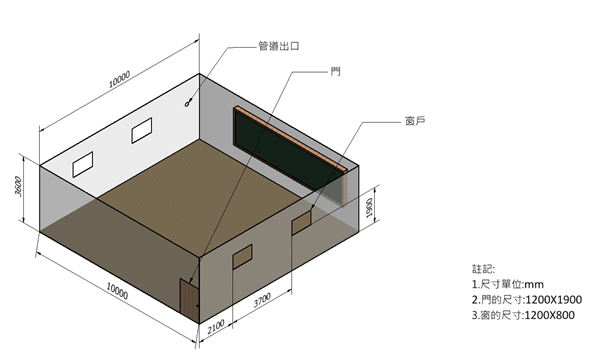
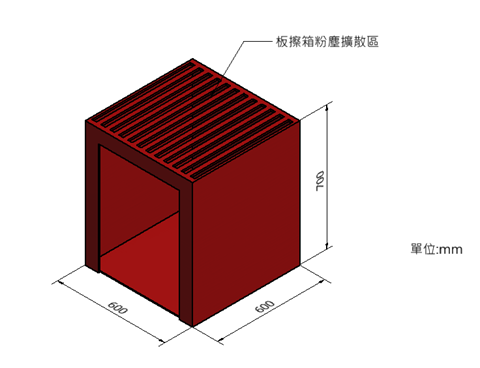
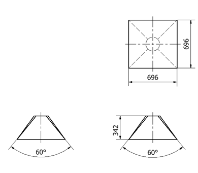

(1) 空間大小
通風環境設置為教室，有窗戶還有門並且設置好管道出口。
(2) 污染源
汙染源設定為可以清潔板擦的板擦箱，讓其粉末等有害汙染在板擦箱內，藉由通風管道排出。
由污染源的類型與區域大小，設計吸氣罩:
(1) 吸氣罩類型：Canopy Hood(頂棚式氣罩)
(2) 吸氣罩尺寸：
(3) 吸氣速度與吸氣量：

由空間大小、污染源放置位置及吸氣罩的安裝條件，規畫管道系統


(1) 管道尺寸規劃：

(2) 管道內流速、流量、損失、壓力等評估


(1) 管道尺寸規劃：

(2) 管道內流速、流量、損失、壓力等評估

Step3.3 管道系統損失與流量需求

由管道系統的損失與流量需求，上網詢找適當的風機，並將性能曲線與管道系統阻抗匹配，求得風扇操作點，確認流量是否滿足吸氣罩的需求。
風機網站:
(1) 質昌風機
(2) 順功風機